|
AN ONBOARD CAMERA |
The project could be of extensive use in AUTONOMOUS SURVEILLANCE ROBOTS, MARS EXPLORERS, UNMANNED VEHICLES(UMVs) and PILOT LESS AIR CRAFTS etc. What we wish to finally come up with is the implementation of AUTONOMOUS NAVIGATION on the Remotely Operated Mobile Platform.
| 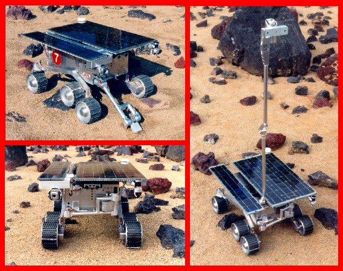 |
| picture 1
URL : robotics.jpl.nasa.gov/tasks/scirover/homepage.html |
The following two figures provide a very simple insight
into the concept of Optical Flow. These figures exemplify how Optical Flow
can be used for detecting obstacles during autonomous navigation. 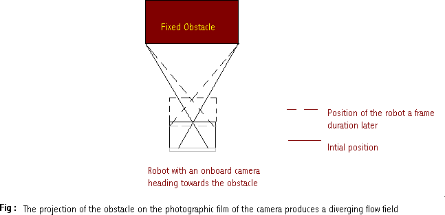
Figure 1
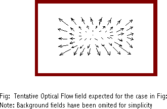
Figure 2
Some help was also taken from "Real Time Optical Flow", the Ph.D. thesis of Ted Camus.
We have divided our project into three modules:
The following figure shows the block diagram of the process.
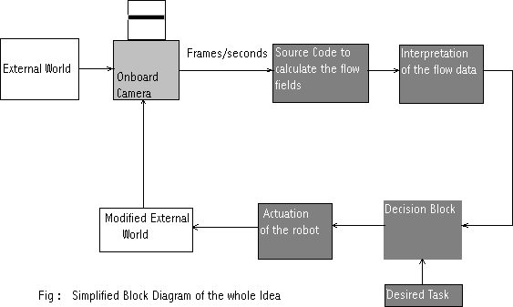
There are two basic techniques used to determine OPTICAL FLOW :
In the differential techniques we estimate
the velocity of the pixels by computing spatiotemporal derivatives
of the image. Here we have to make certain assumptions like
In Region Based Matching we take two consecutive
frames and find the position of pixels in the two images which correspond
to the same object. Let us define the image at two instants to be F(x,y)
and G(x,y) where F(x,y) and G(x,y) contain the value of intensities of
pixel (x,y). To find the best match of the pixel at the position (x,y)
in the first image we have to maximize similarity measures like correlation
function or minimize distance functions like sum-of-squared difference(SSD)
given by:
- We break up the whole image ( 320 X 240 ) pixels in 40 blobs of 8 X 6 pixels and assume that the whole blob moves as a single entity . This simplifies and speeds up the computation. This is known as the rigid bodyapproximation .In this case we get 40 optical flow vectors.
In order to analyze the data from the optical flow field we find the time to contact of the obstacles . The inherent assumption is that the robot is moving in the direction along the optical axis.
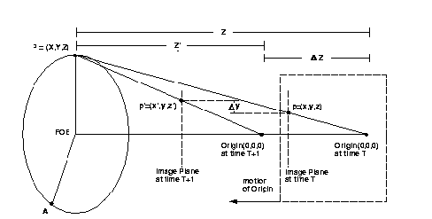
The above figure discusses the optical geometry . The point of interest P at coordinates ( X Y Z ) is projected through the focus of projection centered at the origin of the coordinate system ( 0,0,0 ). P is stationary in the real world whereas the origin of the projection moves forward with a velocity of (dZ/dt). As the image plane moves closer to P , the position of p in the image also changes. Using equilateral triangles:
(x / X) = (y / Y) = (z / Z) ...........eqn.(1)
y / z = Y / Z ...........eqn.(2)
yZ=Yz
Differentiating wrt time,
yZ' + y'Z = Y'z + Yz' .........eqn.(3),
z is the distance of the screen from the optical center. So it remains constant as the robot moves forward. Since the robot is moving along the optical axis, Y also remains constant( see the above figure ). So the eqn.(3) becomes,
(Z / Z') = -(y / y') .........eqn.(4), OR
time to contact = -(y / y').
Since we already know the velocity of the robot (i.e. Z'), we can determine
the depth from eqn.(4) and then we can determine X and Y from eqn.(1).
Thus we can plot Z for each point in the image. Such a plot is called Depth
Plot .
The data used for calculation and for plotting the depth plot is obtained
by convolving the original depth plot image with a smoothening filter which
quite effectively dampens out the noise we were getting with the
depth data.
| 1 | 2 | 1 |
| 2 | 4 | 2 |
| 1 | 2 | 1 |
Some of the results obtained can be seen below --
| 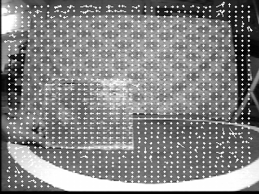 | 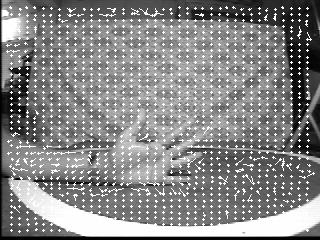 | 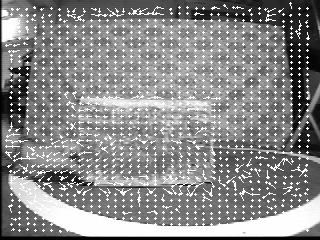 |
| Robot fixed and the Plank moving laterally wrt the optical axis | Robot fixed and the hand moving towards the robot | Robot fixed and the Plank moving towards the robot |
| 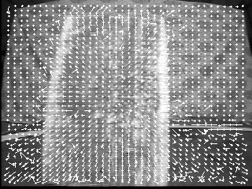 | 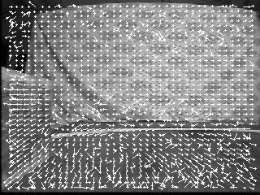 | 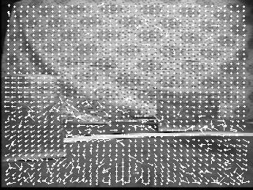 |
| Robot directly heading towards a wooden plank | Robot moving parallel to the wooden plank | Robot moving towards obstacles at different depths
Note : The obstacle that is nearer has larger optical flow fields |
| 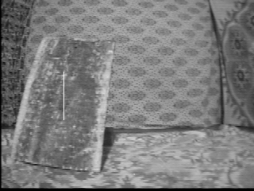 | 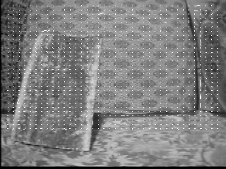 | 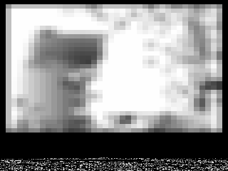 |
| Robot directly heading towards a wooden plank | The corresponding optical flow fields | The corresponding depth plot |
This is also used to find the values of X & Y to --
All this data is then fed to the decision making
algorithm which then determines whether to move right , left ,
to continue and if so by what amount.
The decision about motions are made and appropriate instructions
are passed via the transmitter to a receiver on the robot which are decoded
by the microcontroller on the robot. This microcontroller then sends adequate
pulses to the motors which in turn drives the wheels and the robot moves
as per the decision made by the strategy programme.
IMPLEMENTATION ON HARDWARE
We are implementing the commands given by the decision
making program or strategy program on a physical robot. We
are using a robot made of lego whose pictures are given below.
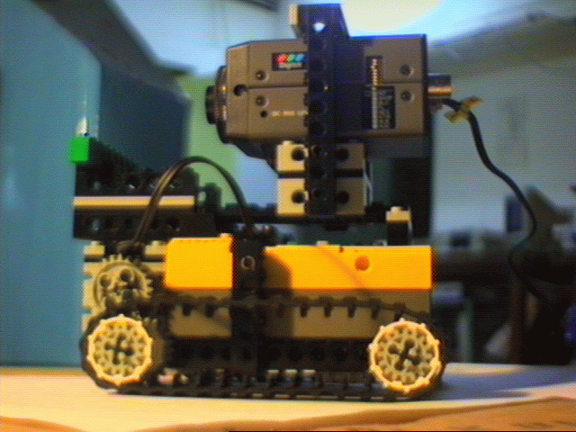
The grabing of image sequences and changing them into the required buffers
in the numerical array
form was accomplished using the MATROX Imaging card . The source code
reffered below first
allocates memory locations for the various memory buffers and child
buffers used and using
standard Matrox command to display frames continuously at a rate of
30 frames per seconds. Then
it grabs two frames for further computation and passes on the required
buffers to the included
header "library.h" . The program also computes the time taken to grab
the two images .The later part of the code contains standard commands for
displaying the buffers processed by the included library.
Included Libraries :- mil.h
stdio.h
stdlib.h
conio.h
library.h ( This library was written by us )
Input :- Real Time data from the vision card
Output:- Two grabbed Image Buffers and the time elapsed
in between the two.
To see the source code click here.
The image buffer size recieved by this segment of the program is an array of 320x240 numbers .The estimation of flow fields is done by minimising the ssd of a 8 x 6 block over a 9 x 9 ie 81 matches . The search is done radially outwards
Finding the Time to Contact and getting the Relative depth plot
The next segment of the program deals with the computation of the Time
to Contact of each 8 x 6
block using the two arrays and the time information supplied by the
above program. It then finds the
relative depths of each point by multiplying the time with the robot's
velocity. It then plots the corresponding depth ploton a scale of 0 - 255.
Decision making (Strategies)
This section stores the real world coordinates of the obstacles in an
array and finds their edges. It uses this data to decide what to do next
and passes this information to the program which sends data to the hardware
through the serial port.
Included Libraries:- mil.h
math.h
time.h
Input:- Two Image Buffers and the time taken to grab them
Output :- Image buffers containing Flow Fields,
DepthPlots Original Image and The Decisions taken
To see the source code click here.
Sending the intructions to the on board microcontroller:- This
is a standard program to send data on serial
port to the microcontroller. Instructions are sent in the form of bytes.
Included libraries:- dos.h
conio.h
math.h
ctype.h
stdio.h
stdlib.h
io.h
Input :- Decisions made by the above program.
Output:- Bytes sent to the microcontroller.
To see the source code click here.
Execution of instructions :- This program was written in assembly
language and was programmed on the
microcontroller . It decodes bytes recieved through the serial port
and sends appropriate instructions to the
motors.
Input:- The bytes sent through the serial port.
Output:- Execution of instructions by the motors.
View1 : The objective of the robot is to reach the pink flag and it
starts heading towards the pink obstacle
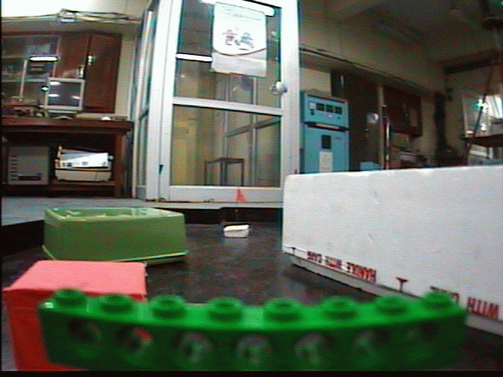
View2 : The robot turns right to ignore the pink obstacle
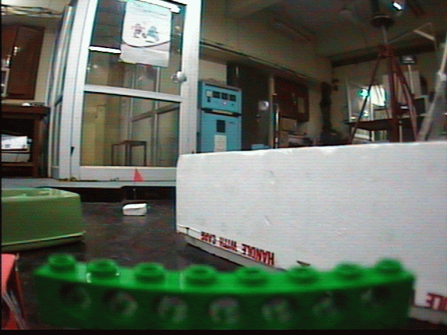
View3 : The robot heads towards the white obstacle
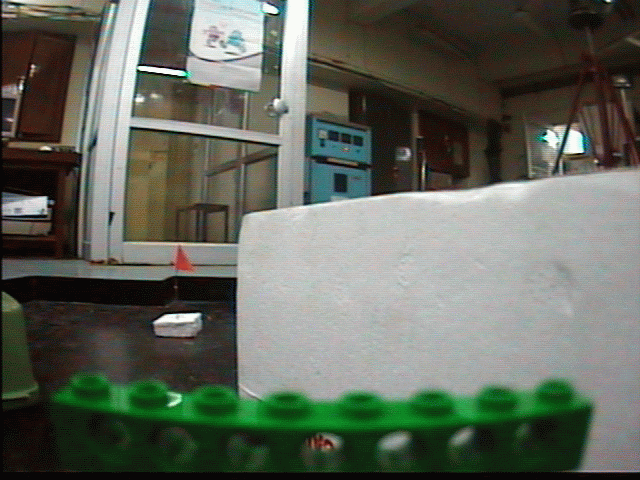
View4 : The robot turns left to ignore the white obstacle and aligns
itself against the green obstacle
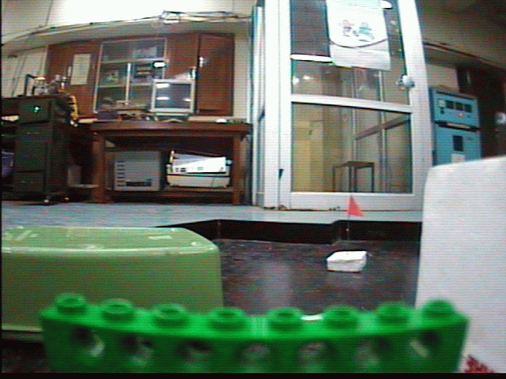
View5 : The robot turns left to ignore the white obstacle and aligns
itself against the green obstacle after which it aligns itself in front
of the guide way between the white and the the green obstacle
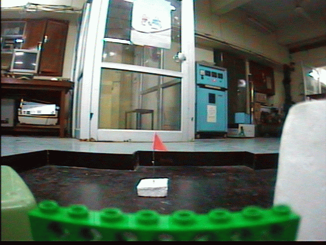
View6 : The robot successfully reaches the target position
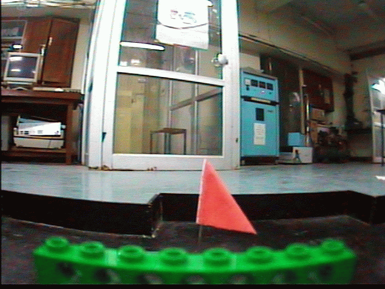
The paper describes three different techniques for computation
of Optical Flow in real time . They are
Gradient Based Optical Flow , Correlation Based Optical
Flow and Linear Optical Flow . The intrinsic
assumption in Gradient Based Optical Flow is that the
brightness at a given point in an image is contant
w.r.t. time and the two dimentional optical flow fields
are computed using this assumption . Correlation
Based technique is the most reliable and robust of the
three . The assumption here is that a certain block
of nearby n x n pixels have the same optical flow fields
and the search space of the corresponding block in
the next frame is limited by a factor , which depends
on the velocity of the moving robot or the external
world . This technique is computationally inefficient
because the search space here is quadratic . Linear
Optical Flow technique is a correspondence search on
the time scale ie it searches for the corresponding
pixel in successive frames at a location specified apriori
.
The paper
also describes algorithms for computation of time to contact of each point
in the field of
view . The estimation of the Focus of expansion for different
sequence of motion is also dealt with in
elaborate detail . The paper also deals with various
optical flow estimation problems like The Aperture
problem and The Temporal Aliasing problem.
Abhishek Tiwari
Himanshu Arora
Tirthankar Bandyopadhyay (4/2000)}
@Article{Barron/Fleet/Beauchmin:1992,
author= { Barron,J.L. and D.J.Fleet and S.S.Beauchemin},
year = { 1992},
keywords = { OPTICAL FLOW IMAGE},
institution= { UWO-CS/UWO-CS/QU-CS},
title = { Performance of Optical Flow Techniques},
month = { July},
pages = { 81},
annote= {
This paper describes various techniques for the computation of Optical Flow fields.
All these techniques can be broadly classified into two major types namely:
differential techniques and region based techniques. A few techniques of both types are
described in this paper. Differential techniques make a broad assumption that either
the intensity is constant with time or the gradient of intensity is constant with
time. This is a crude assumption in the sense that in addition to this assumption we
have an added disadvantage that the gradients usually cannot be calculated accurately.
The region based techniques are more reliable since even if the equations we get after
minimizing the SSD function do not have unique solution, we may use the data from the
past frames to decide on the pixels which brings out a more closer estimate as
compared to the differential techniques.
Himanshu Arora
Abhishek Tiwari
Tirthankar Bandhopadhyay (2/2000)}}
[ COURSE WEB PAGE ] [ COURSE PROJECTS 2000 (local CC users) ]